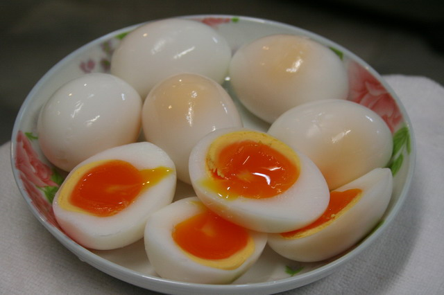

ไข่ต้ม

Ingredients
- ไข่ไก่หลายๆฟองเพื่อความอิ่ม
- แม็คกี้
Mehod
และก็มาถึงสิ่งที่หลาย ๆ คนรอคอย และอยากจะรู้กันแล้วว่า จะต้มไข่ให้ได้ตามที่ใจต้องการนั้น ไม่ว่าจะเป็นไข่ลวก ไข่ต้มยางมะตูม หรือไข่สุก ต้องใช้เวลาต้มนานเท่าไหร่กัน ตามมาดูกันเลย
- ต้มนาน 2 นาที - ไข่ขาวยังไม่สุกดีนัก และไข่แดงก็ยังดิบอยู่ หรือ "ไข่ลวก" นั่นเอง
- ต้มนาน 4 นาที - ไข่ขาวสุกเริ่มดีแล้ว ในขณะที่ไข่แดงก็ยังกึ่งสุกกึ่งดิบและเหลวอยู่ หรือ "ไข่ต้มยางมะตูม"
- ต้มนาน 6 นาที - ไข่ขาวสุกเต็มที่ และไข่แดงก็เกือบจะสุกแล้ว แต่บริเวณกึ่งกลางยังเหนียวอยู่เล็กน้อย
- ต้มนาน 8 นาที - ไข่ขาวสุกเต็มที่ และไข่แดงก็เกือบสุกแล้วเช่นกัน แต่ยังอ่อนตัวอยู่เล็กน้อย
- ต้มนาน 10 นาที - ทั้งไข่ขาวและไข่แดงสุกเต็มที่ หรือ "ไข่สุก"
Nutrition Facts
| serving |
1 |
| Amount per serving |
| Calories |
75KgCalories |
| Fat |
8% |
| sodium 71mg |
3% |
| potassium mg |
0% |
| carbohydrate |
1% |
| protein 7g |
14% |